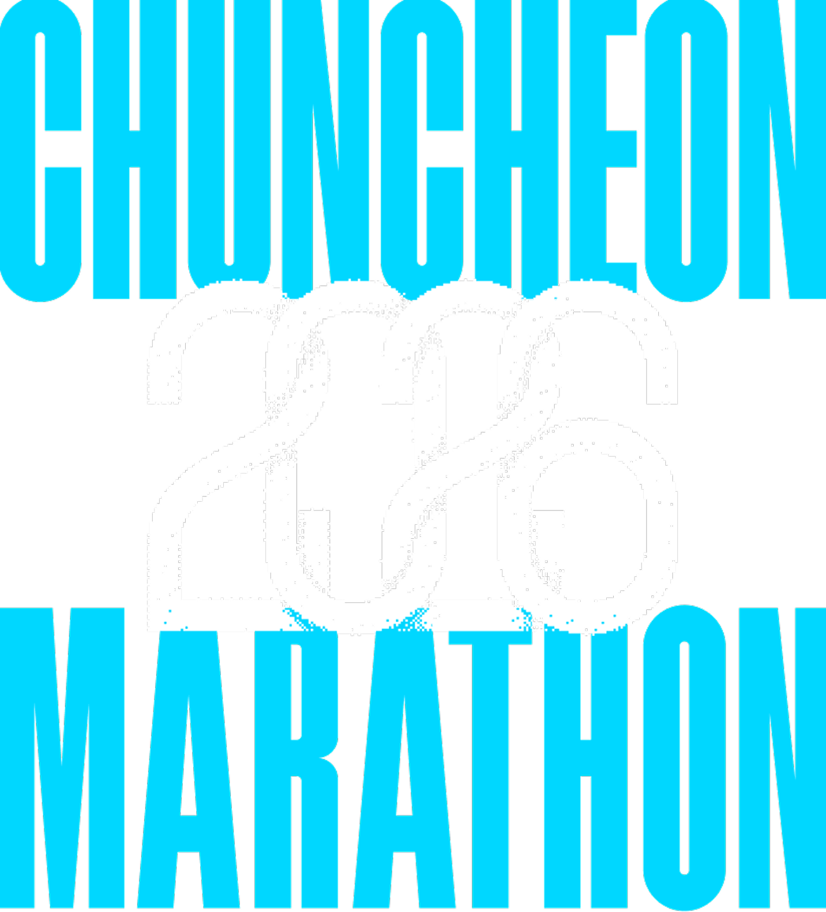
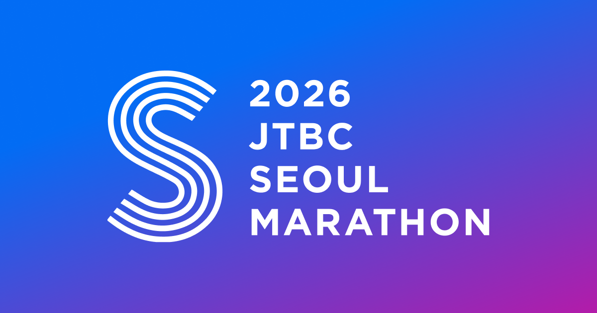
아마추어 마라토너 38명(평균 44.8세, 대부분 남성)의
대회 전날 24시간 식사 기록 Lanpir 외 2025, Eur J Sport Sci
권장량을 채운 사람
(38명 중 2명)
레이스 중 1시간에 먹은 탄수
(권장 최소 30g에도 못 미침)
| 50kg | 55kg | 60kg | |
|---|---|---|---|
| 평소 (보통 식사)체중 × 3.5g 안팎 | 175g | 190g | 210g |
| 최소 목표 ✱ 현실체중 × 7g = 평소의 2배 · 남녀 공통 ✱✱ | 350g밥 5공기 | 385g밥 5.5공기 | 420g밥 6공기 |
| 공식 최대치체중 × 10~12g | 500g~ | 550g~ | 600g~ |
끼니마다 조금씩, 간식 2번 추가.
한 번에 몰아 먹으면 속만 불편해요
삼겹살 · 치킨 · 크림 · 치즈는 탄수는 적고 배만 불러요.
단백질은 끼니마다 조금씩만 유지
반찬을 줄여 비율만 맞추면 전체 양이 부족해서
근육 연료가 잘 안 채워져요.
이틀은 조금 더 먹는 날. 체중계는 잠시 넣어 두기
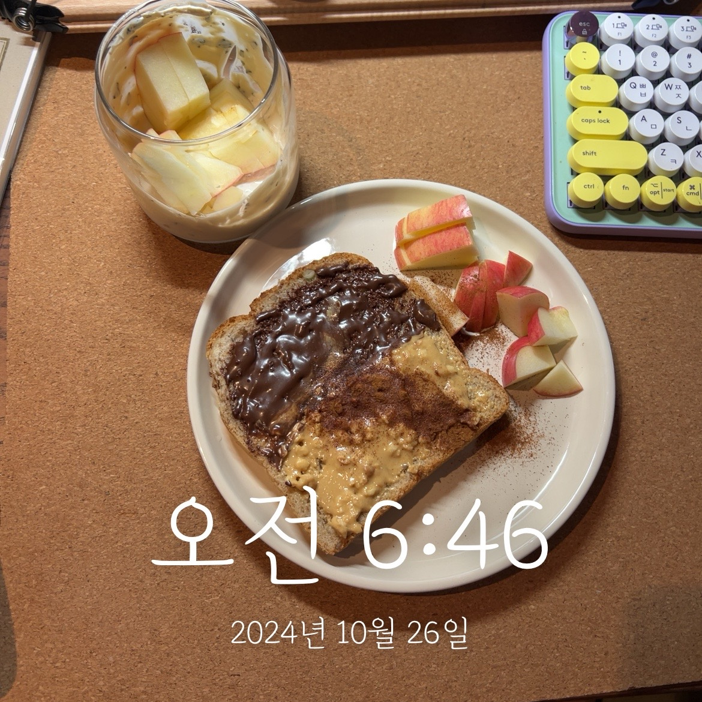
06:46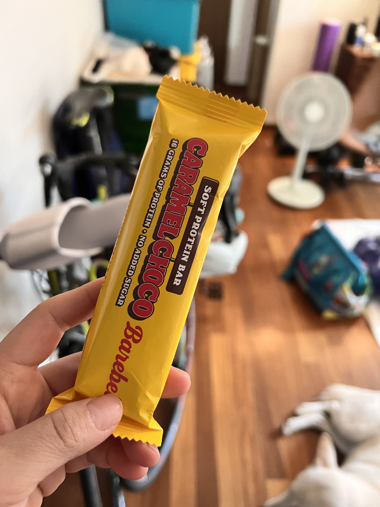
10:06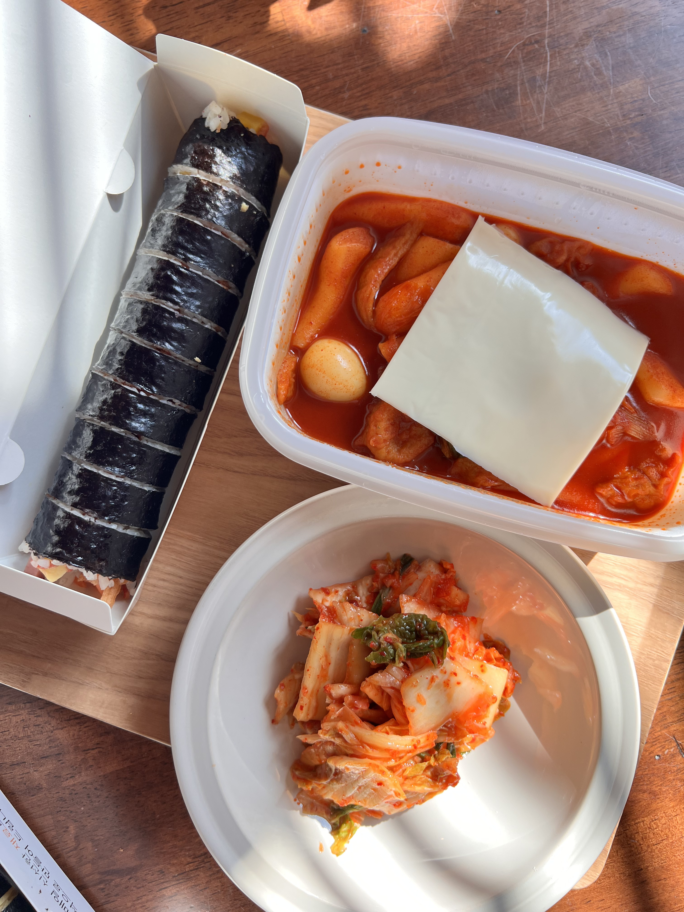
11:13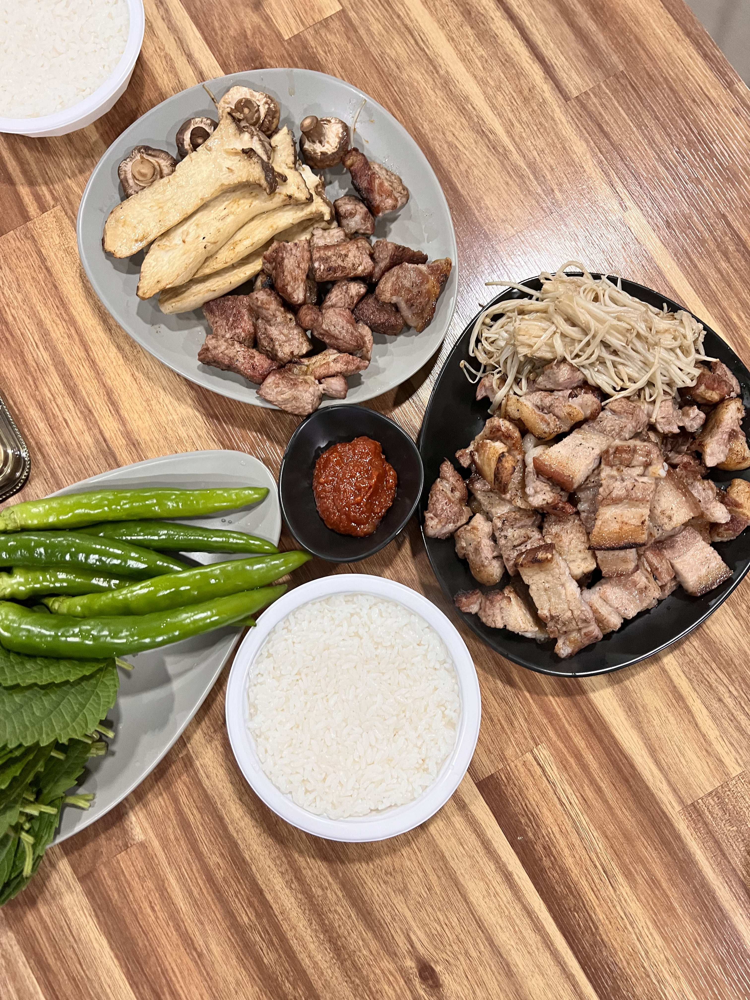
17:50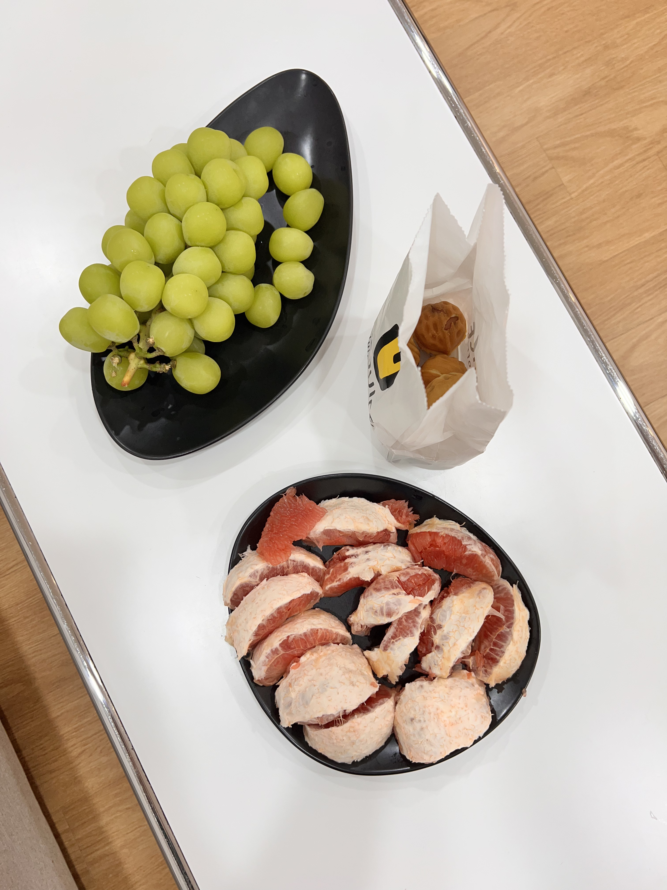
21:01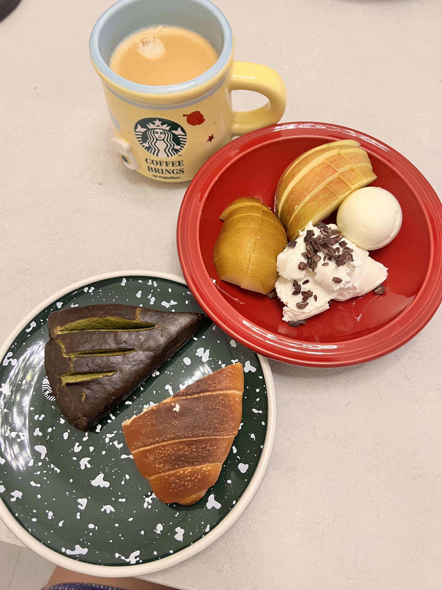
06:40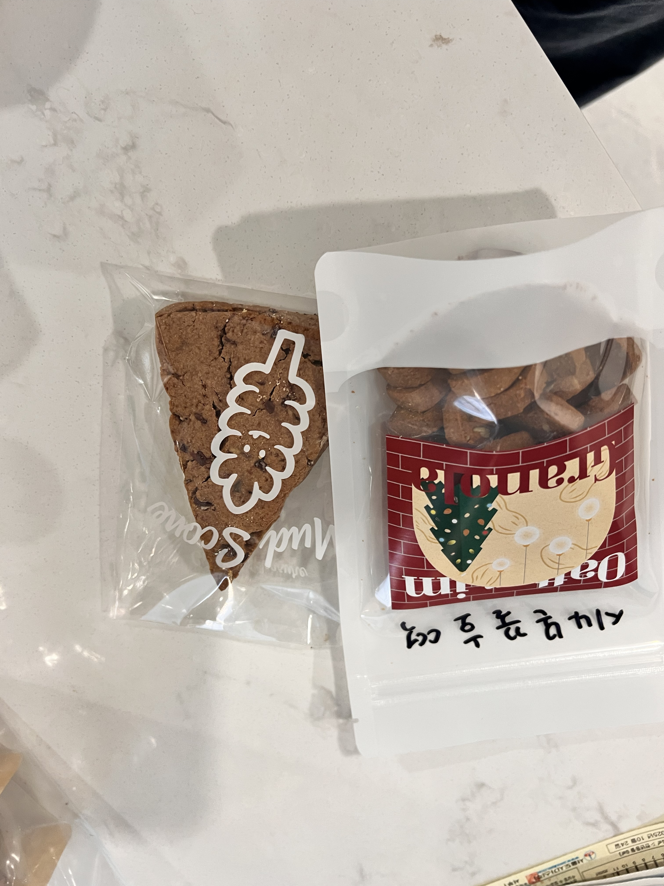
10:20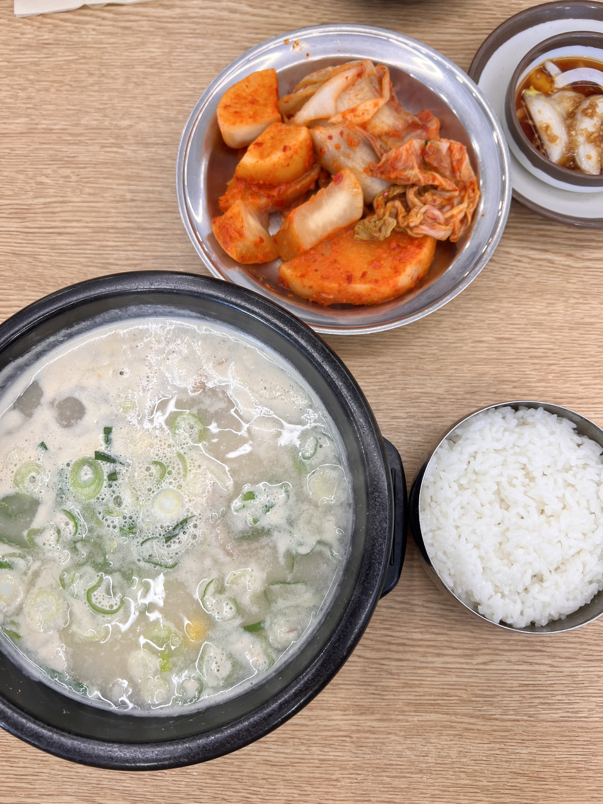
12:26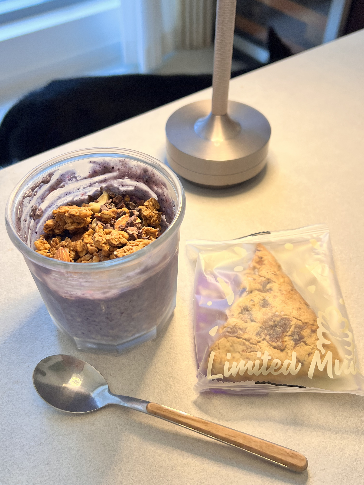
16:17이것저것 다양하게 먹었지만,
탄수는 생각보다 많지 않았어요
종류는 단순했지만,
탄수는 확실히 더 많았어요
55kg이면 55~110g. 식빵 2장 + 바나나 + 잼 ≈ 85g
늘 먹던 메뉴로. 대회 날은 모험 금지!
제 JTBC 아침: 빵 + 바나나 + 스콘
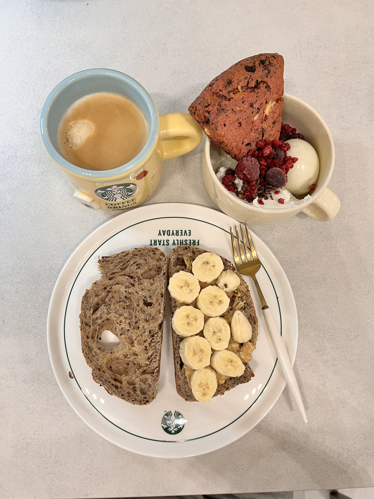
대회 날 04:52아마추어 실제 평균은 1시간에 22g. 권장 최소치(30g)에도
못 미쳐요. 4시간 러너면 젤 5~8개를 30~40분 간격으로